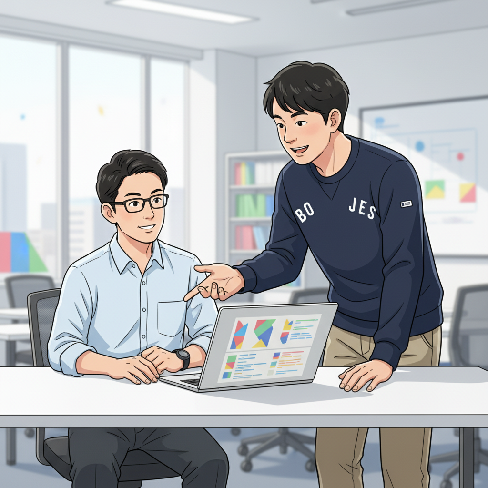
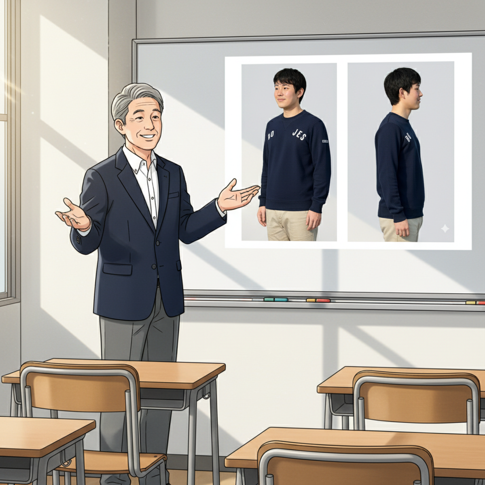
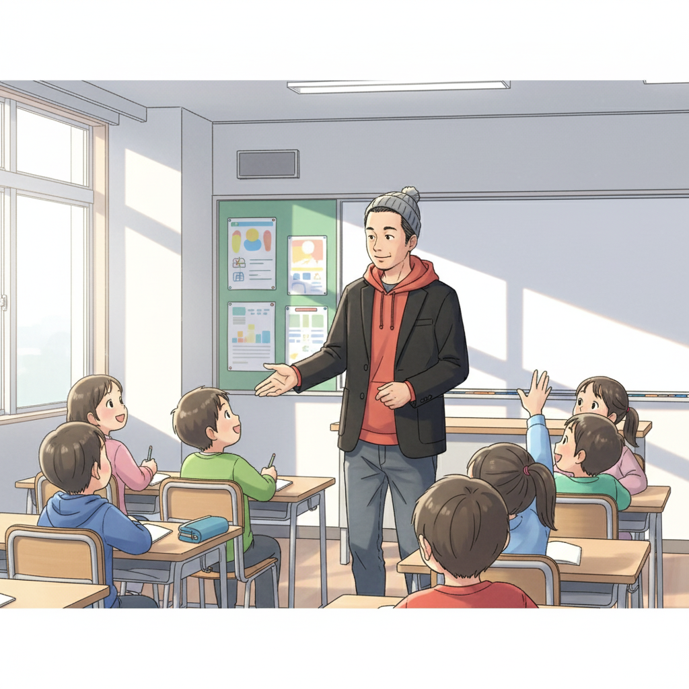

どん底からのスタート：僕が特別支援学級にいた頃 (塾長)
こんにちは、if塾塾長の山﨑です。今でこそこうして塾長なんてやっていますが、中学時代はADHDとASDの診断を受け、特別支援学級に通っていました。授業に集中できない、友達とうまくコミュニケーションが取れない…毎日が苦痛で、自分の将来なんて想像もできませんでした。
学校の勉強はまるで頭に入ってこないし、周りのみんなと同じようにできない自分が情けなくて、自信なんて全くありませんでした。正直、このまま社会に出ても何もできないんじゃないかって、ずっと不安でした。
でも、そんな僕の人生を変えたのが、高校で出会った塾頭でした。塾頭は僕の特性を『個性』として捉え、得意なことを見つけて伸ばしてくれたんです。
才能開花へのターニングポイント：塾頭との出会い (塾長, 塾頭)

塾頭との出会いは、まさに人生の転換期でした。塾頭は、僕の興味があったプログラミングに目をつけ、『発達障害 AIの分野で才能を開花できる』と教えてくれました。最初は半信半疑でしたが、塾頭の指導のもと、少しずつプログラミングの基礎を学んでいくうちに、どんどん面白くなっていったんです。
塾頭は、僕の特性を理解した上で、集中できる環境を整えてくれたり、課題を細かく分けて達成感を味わえるように工夫してくれました。小さな成功体験を積み重ねることで、自信がつき、積極的に新しいことに挑戦できるようになりました。
if塾では、僕と同じように、苦手なことばかりに目を向けて自信をなくしている子どもたちに、自分の得意なことを見つけて伸ばす喜びを体験してほしいと思っています。
それぞれの道へ：学生起業家、eスポーツプレイヤー、そして塾長 (塾長)

塾頭の指導を受けた仲間たちは、それぞれの才能を開花させ、様々な分野で活躍しています。例えば、学生起業家の加賀屋くんは、if塾で培ったITスキルを活かし、革新的なサービスを次々と生み出しています。彼は、自身の特性を強みに変え、社会に貢献できるサービスを作り上げたいという強い想いを持っています。
また、eスポーツプレイヤーのY君は、ADHDの集中力を活かし、プロゲーマーとして活躍しています。彼は、ゲームを通じて多くの人と繋がり、自分の居場所を見つけたと語っています。
そして、僕は塾長として、自身の経験を活かし、後輩たちの成長をサポートしています。if塾は、発達障害を持つ子どもたちが、自分の可能性を信じ、自分らしい成長を遂げられる場所です。
未来へのメッセージ：可能性は無限大 (塾頭)

塾頭として、私は発達特性を持つ子どもたちの可能性を信じています。彼らは、ユニークな視点や発想力、そして驚くべき集中力を持っています。適切な支援と環境があれば、必ず才能を開花させることができます。
もし今、あなたが不安や悩みを抱えているなら、決して一人で抱え込まないでください。if塾には、同じような経験をした仲間や、あなたの可能性を信じてくれる大人がいます。共に学び、共に成長し、自分らしい未来を切り拓きましょう。
学生起業 IT、発達障害 AI、発達障害 プログラミング…どんな分野でも、あなたの才能は活かせるはずです。一歩踏み出す勇気を持って、if塾で新たな自分を発見してください。
🎯 興味を持っていただいた方へ
if塾では、発達特性を持つ子どもたちの「好き」を「才能」に変える教育を行っています。現在の記事内容と実際の活動に大きなズレはありませんが、詳細については直接お問い合わせください。
📌 記事について
この記事は、塾頭による完全自動化への挑戦としてAIが自動生成しています。将来的には塾頭が執筆しているような記事になることを目指しており、現時点では事実と異なる内容が含まれる可能性があります。最新の正確な情報については、お問い合わせフォームよりご確認ください。
🤖 Generated with AI - if塾のブログ自動化プロジェクト